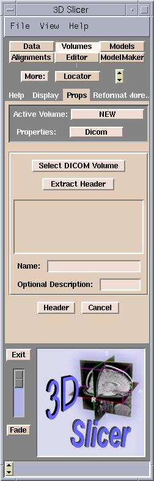
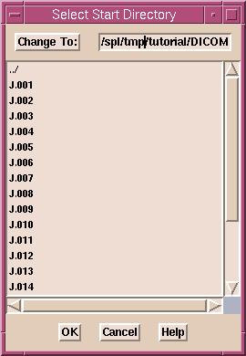
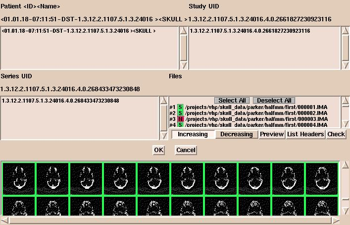

- Press Add Volume in the Data panel. This
will take you to the Props tab of the Volumes panel.

- In the Properties pull down menu select Dicom.
- Press Select DICOM Volume button.
- A dialog box appears. Select the start directory for searching
for the volumes and press OK. After pressing OK, the whole directory
structure will be traversed and every files will be checked whether they
are DICOM files or not. Important information, such as the name and ID of
the patient, the study UID (unique identifier), and the series UID will be
extracted from each DICOM file. Note if you have a large number
of files this is a slow process.

- After the search, a new dialog box appears. Here you can
select a patient, a study of this patient, a series of this study, and the
files of this series. By default, all files of the first series of the first
study of the first patient will be selected, and an interface similar to
the following will appear.

- After pressing OK, the header data of the first
file will be extracted. Additional files may be selected. Pressing the Extract
Header button will show their header info. You can check and modify the
extracted values by pressing the Header button.
- With the Image Data buttons in the Basic
section, select whether your images are grayscale or label maps (an output
of a segmentation).
- The Name field is the name that your volume will
have within the Slicer. You may change this to something descriptive, for
example "presurgical SPGR".
- You may enter a description in the optional Description
field.
- Now hit the apply to set your Name and
Description fields.
- Finally, hit the Apply button to read in the volume. Your
data will now be displayed in the 2D portion of the Viewer window.
DICOM is a complicated standard. The 3D Slicer is not capable of reading
all flavors of it.
It is assumed that the slices of the volume are stored in seperate files,
and they are not compressed, and that the header data is correct . Contains
the correct values of the study and the series UIDs.
For determining the correct slice order, the Slicer uses the following method.
First, it tries to find the Image Number (0x0020,0x0013) data element. When
that is not present, it tries the Slice Location (0x0020,0x1041) data element.
When none of them are available, the files will be ordered as they were found,
possibly not in correct order.
There is a restriction of the Slicer that the slice thickness and spacing
must be the same for every slice.